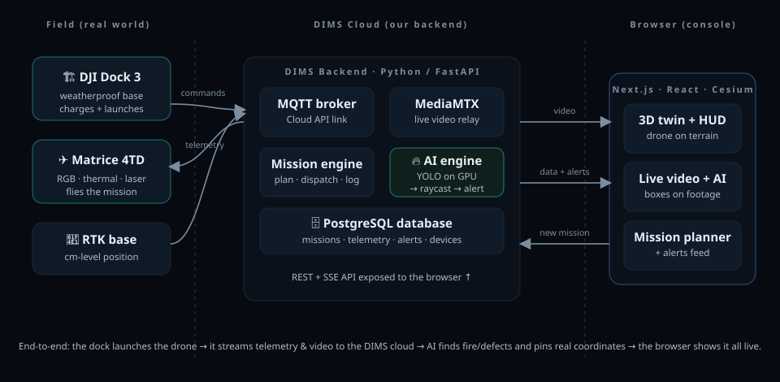

DIMS Platform Architecture
You now understand drones, AI, and software in the abstract. This chapter zooms out to the real thing: how the production platform — the code in our dims-platform repo — is actually wired together. Think of it as the map you’ll keep open while chapters 13–15 walk you through each room.
One system, many small services
DIMS isn’t a single giant program. It’s a set of small, focused services that each do one job and hand their output to the next — a design called microservices. The dock and drone in the field produce raw data; that data flows through a chain of services in our cloud; and at the far end an operator watches it all live in a browser. Your job as an intern is mostly to understand where in this chain your work fits.
Picture a postal sorting centre. A truck (the dock) drops off bags of mail (telemetry + video). One station receives them, another reads the labels, another decides where each item goes, another stamps it, and a final desk hands you a tidy parcel. Nobody does the whole job alone — each station does one thing well and passes it along. DIMS is built exactly like that: many small stations on one conveyor belt. The bonus is that each station can be tested on its own, with a fake feeding it, so we don’t need a real drone to build the platform.
The Dock 3 and Matrice 4TD bind to our cloud over the DJI Cloud API — not to DJI’s own FlightHub 2. Because we own every byte of telemetry, video, and command, we get full control over automation, our performance KPIs, and per-customer customization — which is what makes DIMS a product we can resell. The aircraft still owns its own onboard flight autonomy (obstacle avoidance, RTH, RTK positioning, precision landing); our cloud configures and commands it, but the drone keeps itself safe in the air.
The pipeline at a glance
Here’s the whole spine of the system in one picture. Don’t memorise it — just notice the left-to-right flow: field → broker → bridge → media → AI → coordinates → alert → browser. We’ll walk each stage next.

Following the data, stage by stage
1 · From the field: MQTT over TLS
The Dock 3 and the drone don’t open a web page to talk to us — they speak MQTT, a lightweight messaging protocol built for devices that send tiny status updates constantly. Every message is wrapped in TLS encryption so nobody on the network can read or tamper with it. This is the same Cloud API channel that carries the drone’s position, battery, and health one way, and our commands the other way.
2 · The message broker: EMQX
All those MQTT messages land first at EMQX, an MQTT broker. A broker is a post office: devices publish messages to named “topics”, and whoever cares about a topic subscribes to it. EMQX doesn’t understand drones — it just reliably routes messages between the hardware and our services, so the dock and our code never have to find each other directly.
3 · The dji-bridge service
This is the heart of DIMS’s control plane: a backend service called dji-bridge, written in Python with FastAPI. It’s the one service that actually speaks fluent DJI Cloud API — translating between raw MQTT and the rest of DIMS. Inside it are several focused handler modules, each owning one conversation with the dock:
| Handler | What it does |
|---|---|
| onboarding | The first handshake — pushes config and license, runs update_topo to learn what devices are present, and binds them to our organization. |
| flighttask | Turns a mission into a flight: generates the wayline as a WPML/KMZ file, then prepare → execute → progress to launch it and track how far it’s flown. |
| payload | Controls the camera/gimbal: aim it, “look at” a point, capture a photo, zoom in. |
| DRC | Reactive control — fly_to_point, used when DIMS wants to send the drone somewhere right now (e.g. toward a fresh detection) rather than along a pre-planned route. |
| media | Gets temporary storage credentials so the dock can upload captured photos and videos into our object store. |
| live | Tells the dock to start pushing the live video stream to our media server. |
4 · The media server: MediaMTX
The live camera feed needs to travel from the drone to many viewers with very low delay. MediaMTX is a media server that ingests the dock’s stream and re-broadcasts it — over WebRTC for the low-latency browser view, and RTMP for other consumers. Everything downstream that needs to see what the drone sees subscribes here.
5 · AI inference
The ai-inference service pulls frames from the media server and runs them through our YOLO models (exported to the portable ONNX format and accelerated on a GPU). For each frame it produces detections — boxes around fire, smoke, or defects, each with a confidence score. At this point a detection is still just pixels in a video frame; it doesn’t yet know where in the world it is. Chapter 15 goes deep on the AI.

6 · The coordinatizer
This is the step that makes DIMS special. The coordinatizer takes each YOLO box and raycasts it onto the DIMS 3D digital twin — geometrically, like shining a laser from the camera through the box and seeing where it hits the terrain. Where the ray lands is a real latitude/longitude. So “a smoke box at pixel (820, 410)” becomes “smoke at this exact spot on the mountain.” That conversion — pixels to a pin on the map — is the whole reason DIMS exists.
7 · The scheduler and the rule/alert engine
Two services close the loop. The scheduler runs recurring patrols — it dispatches missions on a timetable so the site is checked automatically. The rule/alert engine watches the coordinatized detections and decides when something is worth shouting about; when a rule fires, it raises an alert — targeting under 8 seconds end to end — and pushes it to the operator’s map, to mobile, and to the city’s disaster-safety platform API. That last hop is how a fire DIMS spots at Bomunsan reaches the people who respond to it.
Where DIMS keeps its data
Different kinds of data need different homes, so DIMS uses a few specialised stores rather than one database for everything:
| Store | Holds |
|---|---|
| PostgreSQL + PostGIS + TimescaleDB | The main database. PostGIS adds geographic superpowers (waylines, coordinates, terrain) and TimescaleDB makes it fast at time-series data like the firehose of telemetry. |
| Redis | A super-fast in-memory store for short-lived IDs (e.g. task/flight IDs) and caching. |
| MinIO | Object storage for big binary files — the captured photos and recorded video. It speaks the same S3 API the cloud world uses, so it’s easy to swap for a cloud bucket later. |
And the screen the operator uses
All of the above is invisible plumbing. The part a human touches is the frontend: a Next.js dashboard — the operator console — that draws the 3D terrain twin, the live feed, the telemetry HUD, and the alerts in one browser window. It reads from the same services we just walked through. Chapter 14 dissects every panel of it.
Two repos: product vs prototype
One last thing that will save you confusion on day one. CNS keeps the platform code in two separate repositories, and they are not the same thing:
| Repo | What it is |
|---|---|
dims-platform | The production product — everything in this chapter. Our own Cloud API backend, the AI services, the data stores, and the operator console. This is where the real build happens. |
dims-showcase | The prototype — the marketing landing page + mission-control demo, live on dims.ai.kr. It’s untouched and stable; chapter 16 covers it. |
Because each service does exactly one job, each one can be developed and tested in isolation — fed by a mock or by the full simulator instead of real hardware. That’s how the whole platform got built before a real drone ever connected. Chapter 13 introduces that simulator, your safest sandbox.
“DIMS is the controller: the Dock 3 and Matrice 4TD bind to our own Cloud API cloud, not FlightHub 2, so we own all the data. The pipeline runs field → MQTT-over-TLS → the EMQX broker → the dji-bridge service (onboarding, flighttask, payload, DRC, media, live) → MediaMTX media server → YOLO AI inference → the coordinatizer that raycasts each detection onto the 3D twin for real coordinates → a scheduler and alert engine that fire alerts in under 8 seconds to the map, mobile, and the city platform. It stores data in PostgreSQL/PostGIS/TimescaleDB, Redis, and MinIO, shows it in a Next.js console, and all of it lives in the dims-platform repo, separate from the dims-showcase prototype.”
Next, chapter 13 gets hands-on with the simulator that lets you exercise this entire pipeline without a single piece of hardware.